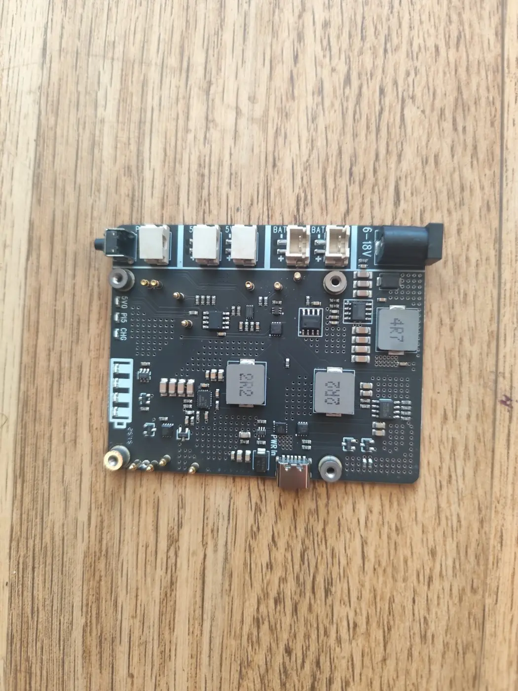
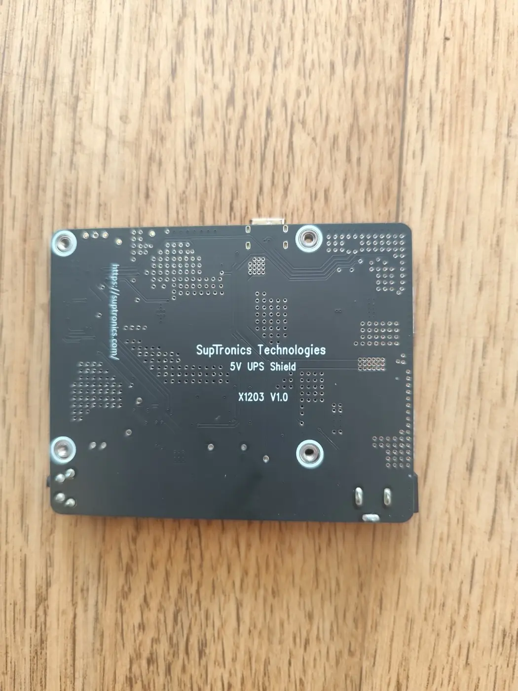
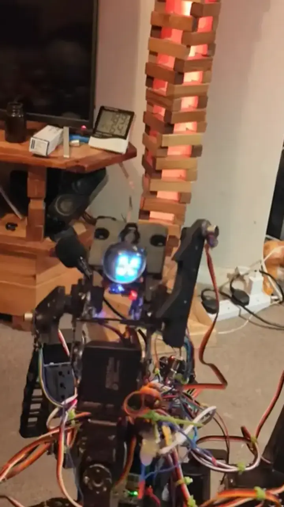

Własna maszyna CNC — mechanika, napędy, sterowanie, wrzeciono i okablowanie zintegrowane w jednym działającym projekcie.
01 / FEATURED PROJECT
Samodzielnie zbudowana frezarka CNC
Nie gotowy zestaw do skręcenia, lecz pełny projekt warsztatowy: konstrukcja, mechanika osi, elektronika sterująca, wrzeciono, ustawienie narzędzia i próby obróbki.
Od pomysłu do prawdziwego detalu
Maszyna powstała jako praktyczne narzędzie do wykonywania własnych elementów. Projekt wymagał połączenia mechaniki, prowadzenia przewodów, zasilania, sterowania ruchem oraz przygotowania plików do obróbki.
Specyfikacja techniczna
3 osieruch sterowany numerycznie
Własna budowarama, mechanika i elektronika
Prowadnice linioweprowadzenie osi i śruby napędowe
Płaskorzeźba koniaWielopoziomowa obróbka i drobne detale — film z YouTube.
04 / ROBOTICS PROJECT
Kora — aluminiowy robot kroczący
Kolejny projekt w portfolio: sześciokątna konstrukcja, 18 serw, sterownik wielokanałowy i dużo cierpliwości do przewodów. Poniżej pokazuję prawdziwy etap montażu oraz pierwsze próby sterowania.
Kora podczas składania — mechanika nóg, serwa i sterowanie spotykają się w jednym prototypie.Robotyka w praktyce
Najpierw mechanika, potem charakter
Każda z sześciu nóg ma trzy stopnie ruchu. Na tym etapie skupiałem się na złożeniu aluminiowej konstrukcji, rozmieszczeniu 18 serw MG996R, zasilaniu i ręcznym testowaniu kanałów. Zdjęcia pokazują prototyp bez retuszu konstrukcyjnego — razem z przewodami, poprawkami i warsztatową rzeczywistością.
Specyfikacja techniczna
6 nóg / 18 DOFaluminiowa konstrukcja krocząca
18 × MG996Rpo trzy serwa na każdą nogę
Raspberry Pi 5główny komputer robota
Sterownik serw · 32 kanałyjedna płytka steruje 18 serwami nóg przez USB
SupTronics X1203 V1.0UPS 5,1 V / 5 A dla Raspberry Pi 5
ESP32-C6sterowanie czasu rzeczywistego i czujniki
RPLidar A2skanowanie otoczenia 2D
2 × IMX708kamera dzienna i NoIR
Stan potwierdzony · 22.08.2026
Obecna Kora18 × MG996R, RPLIDAR A2 oraz dwie kamery IMX708: dzienna i szerokokątna NoIR.Mam / używamX1203 UPS, Raspberry Pi AI HAT+ 2 z Hailo-10H oraz ReSpeaker XVF3800 są już na miejscu i są używane lub testowane w Korze. RPLIDAR C1 pozostaje osobnym lidarem testowym, nie zamiennikiem A2.Mam / czeka na integracjęAdafruit MPR121 jest już na miejscu. Nie oznaczam go jeszcze jako używanego, ponieważ montaż i test funkcjonalny nie zostały potwierdzone.Wcześniejsze wersjeRDS3115MG pracowały we wcześniejszej czteronożnej Korze. RDS5180 to osobne serwo dużej mocy — nie zastępuje obecnych 18 × MG996R.Najnowszy test nógAluminiowa mechanika była OK, lecz stary przewód przy odzyskanym serwie zadymił po podłączeniu.
Kora nie jest samą mechaniką. Raspberry Pi 5 łączy widzenie, mowę, pamięć, planowanie i panel operatorski, a ESP32-C6 obsługuje warstwę urządzeń oraz szybką komunikację ze sprzętem.
1. Zmysły2 × IMX708, RPLidar A2, VL53L1X i czujniki światła
2. UrządzeniaESP32-C6, GPIO, szyja, serwa i oświetlenie IR
3. MózgRaspberry Pi 5 i lokalne usługi systemowe tworzone w Pythonie
4. Percepcja i mowalokalne modele, Ollama, Hailo, STT i TTS
5. Operatorpanel WWW PL/EN, status live, testy i diagnostyka
Schemat pokazuje potwierdzony podział systemu. Hailo pozostaje warstwą integrowaną i testowaną; panel operatorski nie udostępnia tu prywatnego adresu.
Kliknij technologię — zobacz, co naprawdę robi w projekcie i jaki jest mój udział.
Rzeczywiste zastosowanie
ESP32 i Arduino IDE — praktyka, nie teoria
Pracowałem z wieloma płytkami rodziny ESP i dobrze znam ich codzienne kaprysy: wybór właściwej płytki i portu, biblioteki, piny, zasilanie oraz komunikację. W Korze ESP32-C6 obsługuje szyję, czujniki światła, GPIO i łączność z Raspberry Pi, a radio działa na ESP32-S3.
Kora nie powstała z jednego gotowego projektu. Każda wersja zmieniała materiały, mechanikę i sposób sterowania — a błędy z poprzedniej konstrukcji stawały się planem następnej. Na YouTube zostawiłem również prawdziwe próby i wersje, które nie zadziałały.
Korpus i nogi wycięte na mojej frezarce CNC. Mikroserwa, czujnik ultradźwiękowy i elektronika na wierzchu — od tej konstrukcji zaczęła się cała historia.
Etap 02
Czerwony korpus CNC
Kolejna własna konstrukcja wycięta na CNC: mniejszy korpus, inne rozmieszczenie serw i następna seria prób z chodem.
Etap 03 · 4 nogi
Czteronożna Kora — ruch i pierwsza mimika
Osobny etap rozwoju: próby mechaniki na czterech nogach, testy na stanowisku i pierwsze kroki na podłodze. Ruch nie był jeszcze idealny — właśnie te próby pokazały, co trzeba poprawić. W tej wersji pojawiła się także animowana twarz z oczami i rzęsami.
Próba na stanowisku — obserwacja pracy nóg i serw.Pierwsze kroki — krótka, prawdziwa próba na podłodze.Test ruchu nóg — kolejne ustawienia i korekty mechaniki.Oczy z rzęsami — pierwszy mocny element osobowości Kory.
NapędSerwa RDS3115MG w tej wcześniejszej, czteronożnej wersji.SterowanieESP32-WROOM oraz 16-kanałowy sterownik PCA9685PW.Akumulator testowyZeee LiPo 3S 8000 mAh, 11,1 V, 100C.Przetwornica użyta w próbachDC-DC 5,5–30 V → 0,5–30 V, 4 A / 35 W.
Etap przejściowy między frezowanym korpusem a bardziej modułową mechaniką. Pojawiły się metalowe mocowania oraz rozbudowana głowa z czujnikami.
Etap 05
Wersja plastikowa
Lżejsze elementy i nogi z tworzywa pozwoliły szybciej zmieniać geometrię oraz testować kolejne ustawienia bez wycinania całej konstrukcji od początku.
Etap 06
Kora incognito
Czarna osłona ukryła przewody i elektronikę, a podświetlona twarz nadała jej pierwszy wyraźny charakter. Wyglądała trochę jak przestępca — ale już zdecydowanie jak Kora.
Etap 07
Eksperyment na dwóch nogach
Osobna próba z balansem, pionową sylwetką i zupełnie innym układem napędów. Nie każda droga prowadziła do hexapoda — ale każda czegoś uczyła.
Etap 08
Aluminiowa Kora — obecnie
Sztywniejsza mechanika, 18 serw MG996R, 32-kanałowy sterownik serw oraz UPS SupTronics X1203 dla Raspberry Pi 5. To nie koniec historii — to pierwsza wersja, która spina wcześniejsze doświadczenia w jeden system.
Potwierdzone testy archiwalne
Funkcje sprawdzone we wcześniejszych wersjach
To są udokumentowane próby z rozwoju Kory. Nie opisują automatycznie obecnego zestawu sprzętu aluminiowej wersji.
Wcześniejsza Kora
DFRobot HUSKYLENS
DFRobot HUSKYLENS pracował jako samodzielny czujnik wizyjny w jednej z wcześniejszych wersji Kory. Nie łączę tego testu z obecną kamerą Raspberry Pi ani z Ollamą.
Test stabilizacji
MPU6050 + ESP32
Podczas poruszania korpusem głowa utrzymywała poziom. Próba wykorzystywała czujnik MPU6050, ESP32 i dwa serwa.
Próby ruchu
Krok po kroku
Pierwsze ruchy i skręty czteronożnej Kory były testami rozwojowymi, a nie gotowym chodem. Pokazuję je bez ukrywania niedoskonałości.
Kora macha przednimi nogamiKrótka animacja przygotowana ze zdjęcia — nie nagranie rzeczywistego ruchu.
Widok od przodu podczas pierwszych prób ustawienia nóg.Aluminiowa konstrukcja przed uporządkowaniem wiązek.Pełny korpus na etapie integracji zasilania i sterowania.Mechanika nóg i prowadzenie przewodów podczas montażu.Jedna płytka steruje wszystkimi 18 serwami nóg Kory.

SupTronics X1203 V1.0 — UPS 5,1 V / 5 A dla Raspberry Pi 5.

Oznaczenie modelu X1203 V1.0 widoczne na płytce.MG996R — jedno z 18 serw napędzających nogi.Program do ręcznego ustawiania i testowania kanałów serw.
05 / DEVELOPMENT LOG
Kora — relacje i wykonane etapy
Bieżące relacje ze stanowiska oraz konkretne elementy uruchomione i sprawdzone podczas rozwoju robota.
Chód do przodu, obrót w miejscu, profile prędkości oraz zabezpieczenie przed uruchomieniem kilku procesów sterujących naraz.
lipiec 2026 · sprawdzone
Widzenie i orientacja
Dwie kamery IMX708, lidar 2D i pomiar ToF współpracują przy skanowaniu otoczenia, wykrywaniu przeszkód i opisie sceny.
sierpień 2026 · integracja
Aluminiowa mechanika
Montaż 18 serw MG996R, mapowanie 32-kanałowego sterownika, testy UPS dla Raspberry Pi 5 i ręczne ustawianie pozycji każdej nogi.
06 / LIGHT & EMBEDDED
Ręcznie wykonana lampa RGB
Drewniany korpus z listewek wykonałem ręcznie. Gotowy klosz w kształcie kwiatu połączyłem z własnym sterowaniem opartym na ESP32-C3 SuperMini.

Lampa w warsztacie — za Korą dobrze widać ręcznie zbudowany korpus z drewnianych listewek.Dwie niezależne strefy
130 LED, dwa różne efekty
Lampa ma 130 diod RGB podzielonych na dwie niezależnie sterowane strefy. Sto diod w dolnej części tworzy pionowe efekty wewnątrz drewnianej konstrukcji, a trzydzieści diod w koronie oświetla kwiat innym kolorem i animacją. Dzięki temu dół może świecić na przykład na niebiesko, a klosz jednocześnie na czerwono. Kolory i efekty zmieniam programowo.
Niebieski dół i czerwona korona pokazują niezależne sterowanie obiema częściami.
Przykład dla początkujących
ESP32 i dwie strefy LED
To gotowy przykład dla popularnych taśm WS2812B, wykorzystujący bibliotekę FastLED. Dolne 100 diod wyświetla przesuwającą się tęczę, a 30 diod w koronie niezależnie zmienia kolor i łagodnie pulsuje. Numery GPIO są przykładowe — przed wgraniem trzeba dopasować je do własnego podłączenia.
GPIO 4sygnał dla 100 LED w dolnej części
GPIO 5sygnał dla 30 LED w koronie
GNDwspólna masa ESP32 i zasilacza LED
FastLEDbiblioteka instalowana w Arduino IDE
Ważne: 130 diod nie może być zasilanych z pinu płytki ESP32. Taśmy wymagają osobnego, odpowiednio dobranego zasilacza, wspólnej masy i zabezpieczenia. Przy 5 V teoretyczne maksimum dla 130 LED może dochodzić do około 7,8 A przy pełnej bieli. Na linii danych warto użyć rezystora 330–470 Ω; przy niestabilnym sterowaniu także konwertera poziomów 3,3 V → 5 V.
Eksperyment z optyką, światłem i wrażeniem przestrzeni — prosty układ, który całkowicie zmienia odbiór głębi.
Czerwone światło podkreśla tunel powtarzających się odbić.Światło i odbicia
Głębia zbudowana ze światła
Wielokrotne odbicia tworzą iluzję tunelu sięgającego daleko poza rzeczywistą głębokość obudowy. Ten sam obiekt pokazuję w dwóch kolorach, bo zmiana światła całkowicie zmienia jego charakter.
Wersja niebieska — chłodniejszy, bardziej techniczny efekt.
08 / EMBEDDED & LED
Radio internetowe i wizualizacje LED
Samodzielnie zbudowane radio Wi-Fi, łączące strumieniowanie dźwięku, dotykowy interfejs i duże matryce LED reagujące na muzykę.
Działający interfejs: wybrana stacja, aktualny utwór, głośność i tryb VIS.Elektronika i firmware
Od strumienia audio do światła
Projekt łączy obsługę radia internetowego z własnym ekranem sterowania i wizualizacją dźwięku na matrycach LED. Z poziomu panelu można wybierać stacje, śledzić informacje o odtwarzanym materiale, regulować głośność oraz uruchamiać tryb VIS reagujący na muzykę.
Jedna z prób wzorów na dużej matrycy LED.Kolor i układ można zmieniać programowo.Moduł TFT 2,8″ 240 × 320 i prototypowe okablowanie.ESP32-S3-N16R8 — serce sterowania projektem.
Archiwum · wcześniejszy projekt
Sterowanie trzema czujnikami IR
Ta starsza wersja korzystała z ESP32-WROOM, trzech czujników podczerwieni i adresowalnego paska RGB. Gesty przy czujnikach zmieniały stacje, włączały i wyłączały radio oraz sterowały oświetleniem LED. To osobny, prostszy projekt niż obecne radio z ekranem na ESP32-S3.
Confirmed: the mechanics worked and the lead smoked. Unconfirmed: why.
Kora's exact sarcastic reply stays private until the Short is published.
09 / MATERIALS, CNC & SUPPORT
Jak projekt może zacząć na siebie zarabiać
Kora pozostaje osobistym projektem i nie jest na sprzedaż. Zarabiać mogą natomiast sprawdzone materiały techniczne, praca CNC i dobrowolne wsparcie — bez obiecywania rzeczy, które jeszcze nie są gotowe.
02 · W przygotowaniu
Materiały cyfrowe
Powstaną wyłącznie z rozwiązań, które naprawdę zbudowałem, zmierzyłem i opisałem. Pierwszy planowany materiał to dwujęzyczny PDF o bezpiecznym zasilaniu robota wieloserwowego — cena pojawi się dopiero po ukończeniu dokumentu i pomiarach.
Możesz zapytać o wykonanie prostego detalu, tabliczki lub płaskorzeźby podobnej do prac pokazanych w portfolio. W wiadomości podaj wymiary, materiał, liczbę sztuk i dołącz szkic albo plik. Najpierw sprawdzę wykonalność, dopiero potem podam indywidualną wycenę.
Filmy pokazują prawdziwe etapy, testy, poprawki i gotowe detale. Kanał nie udaje reklamy gotowego produktu — prowadzi widza do portfolio i katalogu części użytych w projektach.
Więcej o moich projektach / More about my projects:
https://stapowiczmarcin-sys.github.io/
Części, których używam / Parts I use:
https://stapowiczmarcin-sys.github.io/parts/
YouTube: https://www.youtube.com/@kreatywnymorrcin
Dobrowolne wsparcie / Voluntary support:
https://ko-fi.com/marcinstapowicz
#KoraRobot #CNC #ESP32 #RaspberryPi #DIY
05 · Ko-fi aktywne
Dobrowolne wsparcie przez Ko-fi
Kora nie jest na sprzedaż. Jeśli moje projekty Ci się podobają, możesz postawić mi wirtualną kawę. Dobrowolne wsparcie pomaga kupować części, materiały warsztatowe i przygotowywać dokumentację, ale nie tworzy abonamentu ani obietnicy świadczenia w zamian.
Wsparcie jest całkowicie dobrowolne i służy dalszemu rozwijaniu projektów.
CONTACT / KONTAKT
Masz pytanie, pomysł albo propozycję współpracy?
Najłatwiej złapać mnie mailowo. Kod i kolejne etapy projektów publikuję na GitHubie oraz YouTube — bez udawania, że prototyp zawsze działa za pierwszym razem.